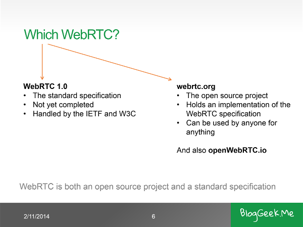
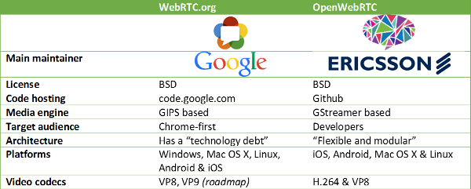

Ericsson’s OpenWebRTC is an alternative to Google’s codebase.
In August, Ericsson decided to officially introduce its own WebRTC stack to the world, calling it OpenWebRTC. Why is this important? Because of this minor distinction around WebRTC:

This is a slide I recently added to my collection. I finally understood that people are often unaware that WebRTC is both a standard AND an implementation of it by Google. Now there are two such open source implementations: The Google one and the Ericsson one.
Ericsson’s OpenWebRTC project offers an alternative implementation to Google’s own WebRTC implementation.
OpenWebRTC.io vs WebRTC.org
I have taken the liberty to draft the simple table below, showing the differences behind the two projects (while I have looked at and compiled Google’s WebRTC, I haven’t done it for Ericsson’s OpenWebRTC. I am relying here only on what’s written on their website).

OpenWebRTC is probably a good starting point for those planning on porting WebRTC to embedded devices or use it on a PC application. Only time will tell if this speeds up as fast as Google’s when it comes to introducing new features and capabilities.
The main two advantages it has? Support of H.264 for those who need it and the fact it isn’t thought of as a module of the Chrome browser.
The Codec Wars
When it comes to video codecs, OpenWebRTC makes a statement of being interoperable with Chrome through VP8 and being attractive to the enterprise by having H.264 supported as well.
The VP8 vs H.264 has been the debate of 2013-2014 in WebRTC. Ericsson (and Mozilla) decided to support both sides of the story, each with its own reasons.
In 2015 we will see this debate gravitate towards VP9 vs H.264 if it was up to Google, but we might end up with a VP9 vs H.265 debate – a more challenging one.
Why Ericsson?
Ericsson is a large company. This project runs at Ericsson Labs, were engineers are probably left to their own devices to tinker with technology. Some of it gets trickled back to the large mothership while the rest is kept in its distant island.
To some extent, OpenWebRTC is no different. It might be important to WebRTC, but probably won’t affect Ericsson in the short or mid term at all.
Ericsson Labs has been dealing with WebRTC since the beginning. Having open sourced their work is a logical (and brave) step. If they are able to attract developers to their code, then they get a higher sit at the table when it comes to deciding the future of WebRTC. Since Ericsson is an incumbent in communication networks, this is of value to them.
What about Bowser?
Bowser is Ericsson’s homegrown WebRTC enabled browser for iOS. They killed if off at some point and have now revived it. For me, Bowser was always about H.264.
This has now changed, because of several things:
- Today, Chrome, Firefox and Opera all support WebRTC on Android (not on iOS). This wasn’t the case in the first iteration of Bowser
- Bowser was never a commercial browser intended for mass adoption by consumers. In the last round it was about H.264. Now it is about showcasing and manually testing OpenWebRTC – a proof of concept that the stack works
Any talks about Bowser being a new competitor to Chrome are greatly exaggerated.
Over to you
How do you see this project? The motives behind it? Its uses? Feel free to share in the comments section.
Interesting and important thanks